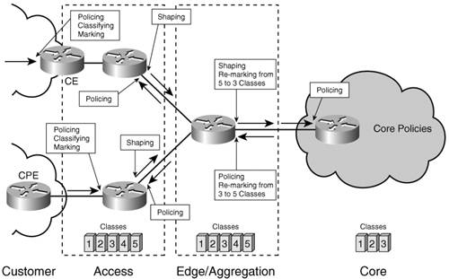
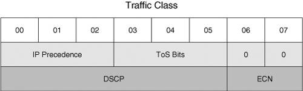

QoS for IPv6It is difficult to understate the value of QoS in today's networks. Its importance is demonstrated by the fact that IPv4 QoS is deployed in more and more networks. Some hoped for QoS improvements in the next generation of the IP protocol, and some still believe that IPv6 is better than IPv4 in this respect. The reality is that neither evolutionary nor revolutionary changes were introduced in IPv6 QoS. QoS improvements in IPv6 are but a myth at this point. The same concepts and same architectures apply to the new protocol, with a few small differences and implementation considerations that are worth mentioning. Differences Between IPv6 and IPv4 QoSQoS is implemented at both layer 2 and layer 3 of the protocol stack. This section discusses feature implementation and feature support differences between IPv4 QoS and IPv6 QoS at both layer 2 and layer 3. These differences revolve mostly around the traffic-classification process where packets or flows are differentiated through the use of various parameters such as IP source address, IP destination address, DSCP, or IP precedence values, and higher-level protocol types. Once classified, the packets can be processed according to a policy that reflects their service level. Differences between the two versions of the IP protocol could lead to different classifiers. Layer 3 QoSThe QoS dedicated resource in the IPv4 packet header, the 8-bit ToS field, is mapped identically to the Traffic Class field in IPv6 and it is used in the same fashion. With IPv6, however, you must consider several additional classifiers, all related to the IPv6 packet header format:
For the time being, among these IPv6-specific classifiers, the Protocol Type field is most used in deployments to differentiate between IPv4 and IPv6 traffic. The use of the other options is still being studied. Other then these few elements that build on the packet format differences between the two protocols, IPv6 and IPv4 are similar as far as QoS is concerned. Table 5-1 shows some features missing from the Cisco implementation of IPv6 QoS at the time of this writing. These gaps are just a matter of implementation prioritization and schedule. Layer 2 QoSQoS is implemented at layer 2, as well. Moreover, layer 2 devices such as switches often integrate the QoS functionalities in hardware, allowing them to support a high-performance service. Therefore, layer 2 QoS represents an important element in the overall network deployment of QoS. Various layer 2 technologies implement QoS in a specific way. ATM uses many of the features listed in Table 5-1 for individual virtual circuits (VC) or for bundles of VCs. Frame Relay relies on the Discard Eligible (DE) bit to deal with congestion. Ethernet with its expansion from enterprise networks to metropolitan-area and service provider networks has seen an increased interest in implementing differentiated services. Ethernet is leveraging its own QoS, as described by 802.1p. All these technologies implement QoS functions on a hop-by-hop basis, relying on concepts similar to those used by DiffServ at the IP layer. A detailed discussion of layer 2 QoS is beyond the scope of this book. Moreover, the actual operation of these QoS mechanisms depends little on the IP protocol type. The dependency relates to the fact that layer 3 criteria and parameters are used to differentiate traffic in classes and mark it for the layer 2 QoS. This means that network elements performing classification and marking for layer 2 might have to be able to differentiate between the two versions of IP. An example of such layer 2 QoS dependency on layer 3 information is that of cable-technologies QoS. Cable implements its own form of layer 2 QoS standardized through DOCSIS. The current version of Data Over Cable Service Interface Specifications (DOCSIS) 2.0 does not mention ways of classifying IPv6 packets. Therefore, IPv6 packets can be handled only in a Best Effort manner by cable networks. In congestion situations, IPv4 voice traffic would be properly prioritized, whereas IPv6 voice traffic would be impacted. At the time of this writing, proposals have been made to update the DOCSIS standard in its 3.0 revision to support IPv6 QoS. Cisco is actively participating in the CableLabs consortium defining the DOCSIS specifications. Link-Efficiency MechanismsTime-sensitive applications have stringent requirements on end-to-end packet delivery. In the case of voice transport, for example, the end-to-end delay should not exceed 200 milliseconds. It is imperative to make sure the packets spend as little time as possible in the routers (processing delay). Moreover, time delay variations (jitter) can be particularly annoying in interactive voice communications. This leads to a second constraint in that the packets have to be delivered consistently. Assuming that the time-sensitive traffic is appropriately prioritized for forwarding through other QoS mechanisms, one thing left to do in helping with the timely and consistent delivery of traffic is conditioning the traffic to better use the links. This conditioning is particularly important when traffic is switched from a fast interface such as 100-Mbps Ethernet to a slow interface such as 56-kbps Frame Relay. Two mechanisms are often used to optimize the link usage for time-sensitive traffic: Compressed Real Time Protocol (cRTP) and link fragmentation and interleaving (LFI). The Real Time Protocol (RTP) supports audio and video applications over unicast or multicast. Its header, together with the IP and UDP header, represents a significant portion of the total packet (which leads to inefficient use of bandwidth, with serious consequences under congestion conditions). cRTP compresses the IP, the UDP, and the RTP headers in one single header with significant improvement in link utilization. The process is done by routers and it is done for each individual link, for each hop. The resources expended by the router on this process are sometimes justified by the service needs. In the case of IPv6, cRTP has to be aware of the IPv6 header format before performing the compression. As shown in Table 5-1, cRTP is not currently supported for IPv6 in IOS. Large data packets can hold the smaller voice packets in the queue, leading to delays or delay variations that impact the voice quality. To deal with this problem, a router can fragment the large frames into smaller sizes and interleave them with the smaller ones carrying voice traffic. This feature is called link fragmentation and interleaving, or LFI. The optimization of the link utilization, although coming at a processing cost, can prove useful. This feature is independent of the IP protocol type being transported. Note Note that with LFI, frames (layer 2) and not packets (layer 3) are being fragmented on lower-speed interfaces such as ATM and Frame Relay. The feature is transparent to the layer 3 protocols, and that is particularly useful in the case of IPv6 (where IP fragmentation is not permitted). Differentiated ServicesThe premise of the QoS architecture presented in RFC 2475 is that as long as the traffic is categorized and marked, network nodes can assign resources to the various categories based on pre-established policies that reflect SLA requirements. When traversing a QoS DiffServ-enabled network, a packet goes through the following stages:
This hop-by-hop operation model makes DiffServ a scalable and easily interoperable approach to implementing QoS in both wide- and local-area networks. A number of classes are defined for each layer of the network. More classes are defined at the access layer, where the bandwidth resources are smaller, for a more granular traffic differentiation. In the network core, traffic can be aggregated in fewer classes. QoS mechanisms are leveraged by each network element to implement defined PHBs. Figure 5-2 presents a network-perspective example of a DiffServ-based QoS deployment. Each node implements appropriate queuing mechanisms and congestion-avoidance mechanisms. Figure 5-2. A Network Perspective of DiffServ OperationSupport for IPv6The IPv6 implementation of DiffServ is identical to IPv4. As mentioned in Table 5-1, some QoS features might not be ported to IPv6, but the available ones suffice to implement QoS in an IPv6 network. The same classifiers can be used to differentiate both IPv6 and IPv4 packets, as follows:
The IPv6-specific classifiers that were discussed earlier in this chapter are not currently used. The ToS field in the IPv4 packet header was more appropriately named Traffic Class in IPv6, but it is used in the same way: for packet marking and packet classification. The guidelines for using these 8 bits, also called the Differentiated Service (DS) field in the context of the DiffServ architecture, are standardized in RFC 2474. The formatting of the Traffic Class field in relation to the DSCP bits is shown in Figure 5-3. The figure also shows the original (RFC 791) segmentation of this field into IP precedence and ToS bits. The use of the last 2 bits of the Traffic Class, called explicit congestion notification (ECN), is defined in RFC 2481. Figure 5-3. DSCP and the IPv6 Traffic Class Field The DSCP marking of a packet is used by the router to classify it and implement the corresponding PHB. Several PHBs are standardized:
DSCP code points are matched to these PHBs, as shown in Table 5-2.
Both IPv4 and IPv6 use the features listed in Table 5-1 to implement the PHBs. For example, the EF PHB would use the LLQ for its packets, whereas the AF PHBs could use CB-WFQ combined with a congestion-avoidance mechanism such as WRED that allows the router to drop inbound traffic based on precedence. Configuration ExampleThe implementation similarities between IPv4 and IPv6 Diffserv QoS translate into configuration similarities. This section captures some of the IPv6 DiffServ concepts in configuration examples. The most relevant aspect of these configurations is the classification; everything else in terms of QoS configuration is IP version independent. The Modular QoS Command Line Interface (MQC) used for IPv4 is available for IPv6, too, with slight syntax changes. With MQC, three configuration steps are necessary to define and implement QoS on a router:
These steps are implemented in the following edge router QoS configuration example. The relevant aspects of each configuration line are highlighted. The highlights will help you connect the explanations in text with the configurations. First, four classes are defined on the router through the following class maps:
One match statement applies to the SIP protocol, and the other is matching packets based on the access control list (ACL) named Control. ipv6 access-list Control
permit ipv6 any host 2001:ABCD:EF:1::1The ACL identifies traffic destined to 2001:ABCD:EF:1::1. Note Numbered ACLs are not supported with the match access-group command for IPv6. The Cisco IOS implementation of QoS reserves a class called class-default for all traffic that does not meet the matching criteria of any of the other defined classes. Note This example was designed to specifically highlight the fact that common classes can be used for IPv4 and IPv6 if the same policies are to be applied to both. On the other hand, when the QoS design is different for the two protocols, Cisco IOS software enables the user to distinguish between IPv4 and IPv6 by using distinct classes. The next step is to instruct the router in this example on how it should handle the traffic in each of the classes identified in the previous step. These instructions represent the PHB for this network element. In this example, the router is required to police the inbound traffic for each class, based on the information provided in the ingress policy shown in Example 5-1. Example 5-1. Ingress Policy Configuration Example
For each class, a committed information rate (CIR) is defined in bits per second. The router drops the traffic that exceeds this CIR for each class except AF1. In the latter case, the router remarks the DSCP value of the offending packets to Best Effort (all bits set to 0). The policy is applied as inbound on the network-access-facing interface, as shown here: interface FastEthernet6/2
service-policy input Ingress-PolicyOn the egress, each traffic class is reserved a certain percentage of the bandwidth and a certain amount of queue resources. The voice service control traffic to the server identified by the Control ACL is marked for expedited forwarding. All these instructions are captured in the Egress-Policy-Child shown in Example 5-2. Example 5-2. Child Egress Policy Configuration Example
MQC enables users to nest QoS policies and create complex PHBs. For example, Egress-Policy-Child is made part of an envelope policy called Egress-Policy-Parent that also shapes the traffic, as shown in Example 5-3. Example 5-3. Parent Egress Policy Configuration Example Integrating the Child Policy from Example 5-2
This parent policy is applied to the network-core-facing interface: interface FastEthernet6/1 service-policy output Egress-Policy-Parent You can use the show policy-map command to review the policy maps. The same command directed to a specific interface provides a lot more useful detail on the policies applied to it. For the router in this example, the output for the network-core-facing interface is shown in Example 5-4. Example 5-4. Review of QoS Policies Applied to a Router Interface
Another useful command in troubleshooting IPv6 QoS is show cef interface detail. Cisco Express Forwarding (CEF) switching has to be enabled for the QoS features to operate on an interface. The other important aspect of a complete QoS deployment is the implementation of congestion-avoidance and congestion-management mechanisms. The queuing mechanisms supported for IPv6 (FIFO, FB-WFQ, CB-WFQ, LLQ, MDRR) and the congestion-avoidance mechanisms (WRED) mentioned in Table 5-1 are configured in the same way as they are for IPv4. As mentioned previously, layer 2 technologies employ various hop-by-hop QoS mechanisms, too. The layer 3 QoS discussed so far has the capability to modify parameters that are used in implementing certain PHBs by devices that operate at lower layers. The example presented in this section had the Egress-Policy-Child set an EF value for the DSCP field of packets in class Voice-Control. The set command provides options that enable the router to modify layer 2relevant QoS parameters, too, as shown in Example 5-5. Example 5-5. QoS Options Available for the set Command
With the options highlighted in Example 5-5 enabled, a router modifies the marking of layer 2 frames regardless of the version of the transported IP packet. As you can understand from the example in this section (if you are familiar with IPv4 QoS), other than classification-specific differences, DiffServ QoS is configured the same way for both IP protocols. Integrated ServicesThe IntServ model operates similarly to circuit-switched networks. Prior to sending the traffic, resources are reserved across the entire path based on the service level required. This explains the natural mapping of IntServ to circuit-based network types such as ATM and Frame Relay. In this architecture, there are two sides to implementing QoS. One is a cross-network control plane that manages the reservation of resources, and the second is the traffic handling by each node based on the reservations made for it. The control aspect of the IntServ is handled by the Resource ReSerVation Protocol (RSVP; RFC 2205). It is a control protocol similar to Internet Control Message Protocol (ICMP). In a nutshell, the operation of RSVP relies on two steps. First, the source of traffic sends a Path message to the destination, and on the way it collects resource information from the traversed nodes. Second, the receiver sends a response. The message is called Reservation, and it requests the resources needed by the application. This is a unidirectional process, so for a bidirectional flow it has to be started by each end. Through the reservation process, RSVP initiates and maintains soft state for each flow on all network elements that are traversed by it. This is, of course, a source of scalability concerns because routers will have to maintain state for a significant number of flows in large networks. Despite improvements made to the RSVP implementation, these concerns have slowed the adoption of the IntServ versus the DiffServ model. After resources have been reserved for a given flow, routers have to recognize the traffic and assign to it the reserved resources. In performing these functions, network elements use some of the mechanisms listed in Table 5-1. Support for IPv6Differentiated handling of IPv6 traffic at the network element level is supported through the implementation of the various mechanisms listed in Table 5-1. Their availability in Cisco IOS software was discussed in the DiffServ section of this chapter. This leaves RSVP as the only missing piece necessary to support the IntServ model for IPv6 QoS. RFC 2205 makes all the provisions necessary to support RSVP on top of IPv6, and they are similar to IPv4. The RFC also points out that the IntServ model can capitalize on the flow label that is characteristic to IPv6. The flow label could be used to efficiently mark the packets of a flow for the entire path reserved for it. RFC 2205 provisions support for the exchange of flow label information in IPv6. The flow label use with RSVP was envisioned as early as RFC 1809, and operational guidelines for its use were provided in RFC 3697; however, at the time of this writing, no implementations leverage it. QoS services implemented based on the IntServ model are not common. Today's networks are more likely to leverage the high-bandwidth infrastructures along with DiffServ implementations. For these reasons, at the time of this writing, there is no implementation of RSVP for IPv6 in Cisco IOS software or other vendor products. Nevertheless, RSVP could be implemented in the future, justified by user demand and to address specific applications such as videoconferencing. It is also important to note that demand for its implementation might not be driven just by QoS. RSVP found its use in implementing other services such as label exchange in Multiprotocol Label Switching (MPLS) and in MPLS traffic engineering. The future IPv6-based MPLS implementations might drive the implementation of RSVP, too. Note Note that IPv6 might leverage IPv4 RSVP during the deployment of 6PE and 6VPE, as described in the following section. | |||||||||||||||||||||||||||||||||||||||